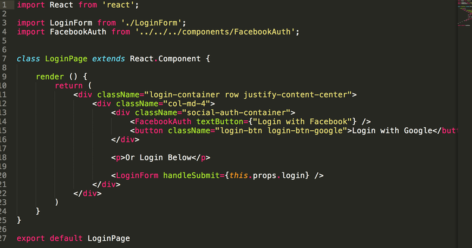
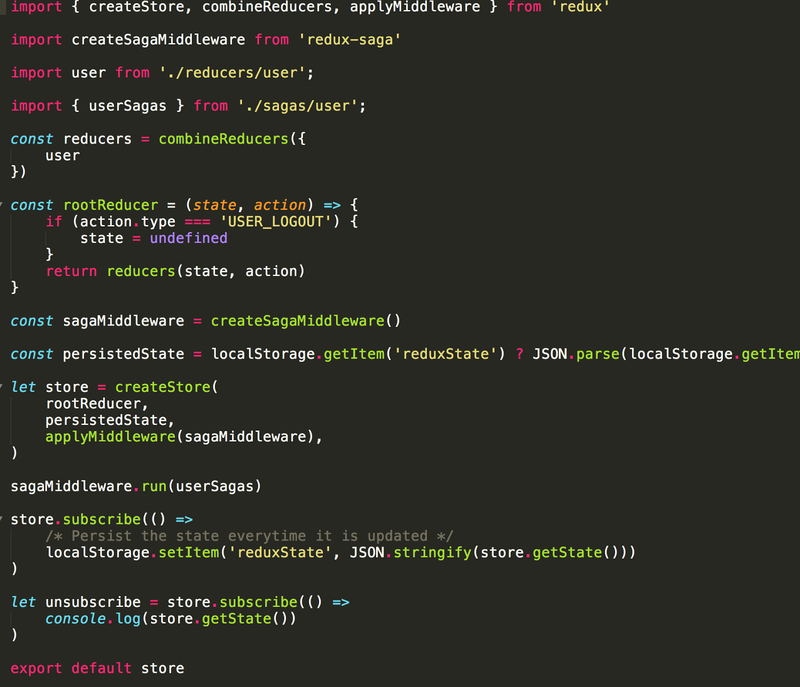

Creating your own framework with React
React
First we should know the basics of React:
- Is the view layer.
- Based on components.
- A component must have a render method. The method must return a valid html tag (In React 16 you can return an array).
- Each component can have props and state.
Difference between state and props:
Props: props (short for properties) are a Component's configuration, its options if you may. Props are received from above and are immutable as far as the Component which receives them is concerned. A Component cannot change its props, but it is responsible for putting together the props of its child Components.
State: The state starts with a default value when a Component is mounted, and then suffers from mutations in time (mostly generated from user events). It's a [*]serializable representation of one point in time a snapshot.
A Component manages its own state internally, but besides setting an initial state has no business fiddling with the state of its children. You could say that the state is private.
[*] We didn't say props are also serializable because it's pretty common to pass down callback functions through props.
The state is optional. Since state increases complexity and reduces predictability, a Component without state is preferable. Even though you clearly can't do without state in an interactive app, you should avoid having too many Stateful Components.
Resume of props ans state
| - | Props | State |
| Can get initial value from parent Component? | Yes | Yes |
| Can be changed by parent Component? | Yes | No |
| Can set default values inside Component? | Yes | Yes |
| Can change inside Component? | No | Yes |
| Can set initial value for child Components? | Yes | Yes |
| Can change in child Components? | Yes | No |
Redux
Redux is a predictable state container for JavaScript apps. It helps you to write applications that behave consistently, run in different environments (client, server, and native), and are easy to test. You can use Redux together with React, or with any other view library. It is tiny (2kB, including dependencies).
Creating the framework
The Architecture:

The main key here is that exists only one store (one big Javascript object), that can be stored, usually in the local storage. This is a big immutable object . You must be familiar with the concept of immutability in Javascript. You can’t change any value of the store object.
Basically when something happens you might want to modify part of this big object, but don’t change it, just create a new object, change it, and return it. Where we do this functionality? In a reducer.
One big change is that you have to wrap the entire react application in a provider component. The provider component is listening at the store, and when it changes, a react component can be re-rendered.

In the image we can see how to wrap the Application in the Provider component imported from react-redux.
Smart Components or Containers: Components that are connected to a portion of the store. They can trigger or fire actions.
Dumb Components: They are just normal components, can receive data as props from smart components.
The following piece of code is the LoginPage component. This is a smart component. Maybe you are wondering why…

Well... because we are connecting it with part of the store, also it can trigger actions. Actions are just javascript functions that dispatch an action. Actions are listened by reducers.
In the image below there is a login function (ES6 arrow function => ). The login receives data and dispatch something… an action with type equal to LOGIN_REQUESTED

We can see a couple of things:
First of all we are importing connect. This allows us to connect a react component with the state object (store) and trigger actions.
The second is that we are importing a react component (LoginPage) and we are connecting it. So, now the component have access to part of the store (user) and we can trigger actions (login).
Now inside the LoginPage component we can use this.props.user, because we have access to a part of the store, in this case only the user. Also we can trigger the login action by doing this.props.login(). Then, this is a Smart Component.
Now the Dumb Component… and it is the LoginForm component. We are importing it in the LoginPage component.
It looks like:

If you take a look, when the button is clicked, we execute the function handleSubmit, and this function executes this.props.handleSubmit(). Yes, this is a props that was passed from the smart component. In other words, we are triggering the action login() that is listened by a reducer or a middleware.
In this case, the login function makes an AJAX request and it is intercepted by sagas middleware (User Sagas):

Sometimes actions are intercepted by a middleware. Here is saying: when the action LOGIN_REQUESTED is fired, execute the login generator (make an API call). If the api call was successful, then execute the loginSuccessful generator, that it triggers another action, in this case SET_TOKEN. Finally, the token is set in the reducer.
The following piece of code belongs to the user reducer.

Before dispatching the login action, the store object looks like:

After triggering the login() action, the store object looks like:

We can see how the store has been changed. Of course we have access to the user object in the LoginPage component via this.props.user. We can do cool things like verifying whether the user object has token or not. In case that has one, redirect our visitor to the Home Page, otherwise redirect to the Login Page again.
This is how we connect Sagas middleware, the store and the reducers:

We are exporting the store, and we are using it with the Provider Component. :-). Take a look at the step where I talk about the provider and you can see how we use the store
A special recommendation is that should have a balance between Smart Components and Dumb Components. You don’t want to have too many smart components because it implies to connect them to the store or a portion of it. At the same time if you have too many dumb components it means that you are passing props everywhere and it can be extremely hard to follow, especially because you can pass data through many levels (component 1-->component 2….--->component n)
Conclusion
Create your own framework with React can be a hard task at the beginning, but if you undestarnd the concept behind that you could replace the differents layers as much as you like according to your needs.
For example here I am using Redux for the data layer, but you can go for Flux or MobX. Also, an alternative for redux-sagas is redux-thunk.
This world is growing really fast with React, React Native, React VR, so be prepared...
Comments
Comments powered by Disqus